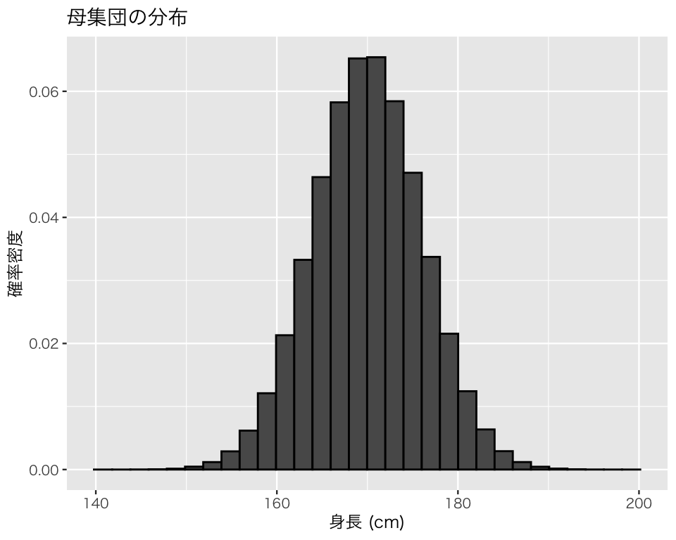
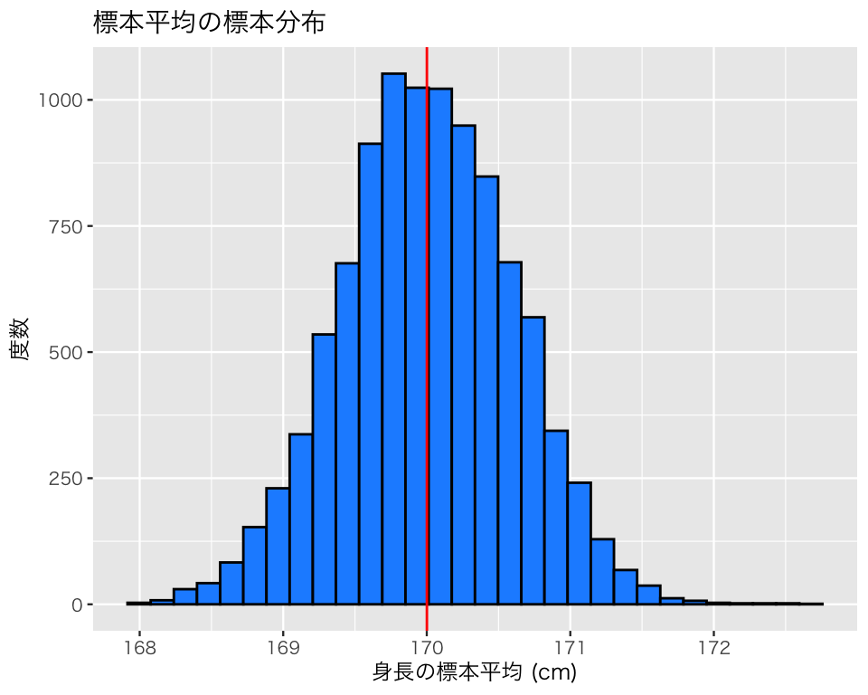
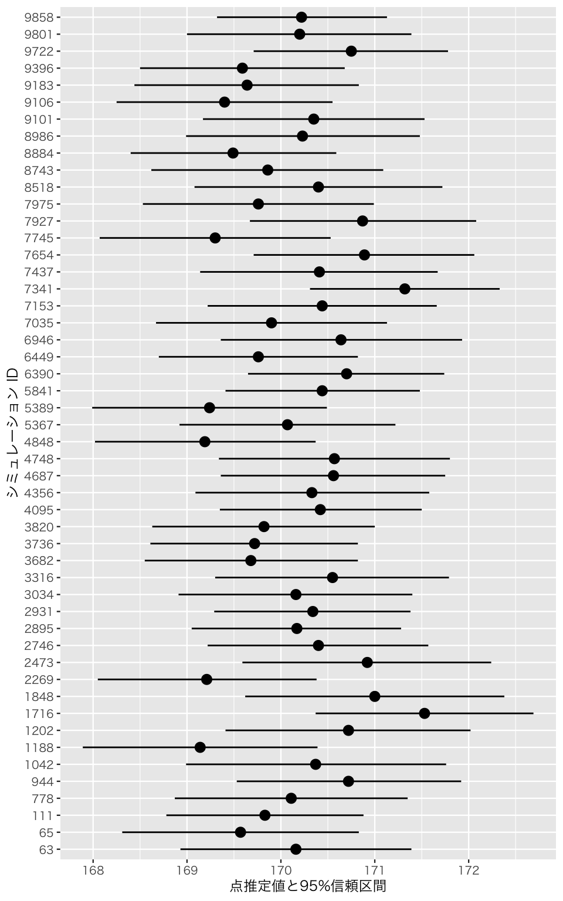

library(tidyverse)
## 図のなかで日本語を使えるようにする
## フォントの設定はお好みで
## （Unix/Linux ではIPAexフォントのインストールが必要かも）
if (.Platform$OS.type == "windows") { # Windows
library(fontregisterer)
my_font <- "Yu Gothic"
} else if (capabilities("aqua")) { # macOS
my_font <- "HiraginoSans-W3"
} else { # Unix/Linux
my_font <- "IPAexGothic"
}
theme_set(theme_gray(base_size = 9,
base_family = my_font))9 母平均の推定
今回の目標
- 標本を利用して母平均を推定する方法を理解しよう！
9.1 準備
必要なパッケージを読み込む。
9.2 母集団を定義する
成人男性の身長に興味があるとする。母集団の人口を100万、母平均を約170cm、母標準偏差を約6cm に設定する。
pop <- rnorm(1e6, mean = 170, sd = 6)母集団の身長分布は以下のようになる。
pop_height <- ggplot(tibble(pop),
aes(x = pop,
y = after_stat(density))) +
geom_histogram(color = "black") +
labs(x = "身長 (cm)",
y = "確率密度",
title = "母集団の分布")
plot(pop_height)
この母集団における身長の母平均は、
mean(pop)[1] 170.0008であり、母標準偏差は、
sd(pop)[1] 6.001557である。
9.3 標本を抽出して母平均を推定する
9.3.1 標本1
100万人の母集団全員を調べるのではなく、100人だけ標本として抽出し、その標本を利用して母平均を推定してみよう。
標本サイズ100の標本を1つ抽出する。
N <- 100 # 標本サイズ
sample_1 <- sample(pop, size = N, replace = FALSE)9.3.1.1 点推定 (point estimation)
標本平均を計算する。
mean(sample_1)[1] 169.3795これが母平均の点推定値 (point estimate) である。
9.3.1.2 区間推定 (interval estimation)
区間推定では、1つの値を示す代わりに推定に区間を利用することで、推定に対する不確実性（自信のなさ）を示す。
推定に標準正規分布を利用する場合、身長 \(h\) の点推定値を \(\bar{h}\) とすると、以下のように定義される信頼区間 (confidence interval) を区間推定に使う。 \[ \left[\bar{h} - Q \cdot \mathrm{SE}, \bar{h} + Q \cdot \mathrm{SE} \right]. \] ここで、SE は標準誤差 (standard error) で、これは以下のように推定する。 \[\mathrm{SE} = \frac{u}{\sqrt{N}}.\] \(N\) は標本サイズ、\(u\) は不偏分散の平方根（下で説明する）である。
また、\(Q\)（と\(-Q\)） は、どのような信頼区間を求めたいかによって変わる。 例えば、95％信頼区間を求めたいときは、\(Q = 1.96\) を使う。
特定の信頼度（信頼度に何パーセントを使うか）に対するQの求め方は次の通りである。 まず、100%から信頼度を引く。95%の場合 \(1 - 0.95 = 0.05\) である。次に、その値を2で割る。 95%の場合、\(0.05/2= 0.025\) である。この値を qnorm() 関数に当てはめる。ただし、lower.tail = FALSE を指定する（指定しない場合は\(-Q\) が出てくるので、それを利用してもよい）。
(Q_95 <- qnorm((1 - 0.95) / 2, lower.tail= FALSE))[1] 1.959964小数第2位までで丸めると、
round(Q_95, digit = 2)[1] 1.96である。
87%信頼区間を使いたいときは、
(Q_87 <- qnorm( (1 - 0.87) / 2, lower.tail = FALSE))[1] 1.514102を使う。
次に、SE（標準誤差）を求めよう。 そのためにまず、標本の分散（不偏分散, unbiased variance）を計算する。身長を \(h\)とすると、身長の不偏分散 Var(\(h\)) は \[\mathrm{Var}(h) = \frac{\sum_{i=1}^n (h_i - \bar{h})^2}{N - 1}\] と定義される。これは、var() で計算できる。
(var_1 <- var(sample_1))[1] 37.35728この平方根が不偏分散の平方根である。
(sd_1 <- sqrt(var_1))[1] 6.11206この値はsd() で直接求められる。
sd(sample_1)[1] 6.11206母分散（母集団の分散）または母標準偏差（母集団の標準偏差）を知らないときは、ここで計算した標本から得られる値を推定値として使う。ここでは、標本の標準偏差（不偏分散の平方根）を母標準偏差の推定値として使おう。 すると、このサンプルから推定されるSEは、
(SE_1 <- sd_1 / sqrt(N))[1] 0.611206となる。
以上から、95%信頼区間の下限は、
(lb <- mean(sample_1) - Q_95 * SE_1)[1] 168.1816上限は、
(ub <- mean(sample_1) + Q_95 * SE_1)[1] 170.5775よって、この標本（標本1）から得られる95%信頼区間は、[168.18, 170.58] である。
9.3.2 信頼区間を求める関数を作る
上で説明した方法で信頼区間を求められるが、以上の内容を標本を抽出し直す度に実行するのは面倒なので、信頼区間 (confidence intervals) を求める関数を作ってしまおう。信頼度は引数を指定して選べるようにする。
get_confint <- function(x, level = 0.95) {
## 標準正規分布を利用して信頼区間を求める関数
## 引数：x = 推定に使う標本（サンプル）
## level = 信頼度。既定値（デフォルト）は 0.95
## 返り値：点推定値、信頼区間の下限値、信頼区間の上限値の3つを含むベクトル
N <- length(x) # サンプルサイズ
mean_x <- mean(x)
SE <- sd(x) / sqrt(N)
Q <- qnorm((1 - level) / 2, lower.tail = FALSE)
lb <- mean_x - Q * SE
ub <- mean_x + Q * SE
estimates <- c(round(mean_x, 2), round(lb, 2), round(ub, 2))
names(estimates) <- c("estimate", "lower bound", "upper bound")
return(estimates)
}先ほどのサンプルを使い、この関数が意図した通りに動くか確認しよう。
get_confint(sample_1) estimate lower bound upper bound
169.38 168.18 170.58 上で求めたのものと同じ結果が得られた。
この関数を使って50%信頼区間を求めるには、
get_confint(sample_1, level = 0.5) estimate lower bound upper bound
169.38 168.97 169.79 とする。
87%信頼区間は、
get_confint(sample_1, level = 0.87) estimate lower bound upper bound
169.38 168.45 170.30 で求められる。
以下ではこの関数を利用しよう。
9.3.3 標本2
先ほどとは別の標本（サイズは同じ）を抽出して、母平均を推定してみよう。
sample_2 <- sample(pop, size = N, replace = FALSE)get_confint(sample_2) estimate lower bound upper bound
169.41 168.22 170.59 先ほどとは異なる推定値が得られた。
9.3.4 標本3
もう1度やってみよう。 先ほどとは別の標本（サイズは同じ）を抽出して、母平均を推定してみよう。
sample_3 <- sample(pop, size = N, replace = FALSE)get_confint(sample_3) estimate lower bound upper bound
169.65 168.44 170.86 9.4 シミュレーション
標本抽出を何度も繰り返し、推定（の誤差）がどのようにばらつくか確認してみよう。
まず、シミュレーションの繰り返し回数を決める。1万回にしてみよう。（コンピュータの性能があまり良くない場合は、この回数を少し小さめ [例えば 1e3] にしたほうがいいかもしれない）。
n_sims <- 1e4結果を保存する容器を用意する。今回は、1回ごとに保存する値が3つあるので、1万行 \(\times\) 3列の行列 (matrix) を用意する。行 (row) の数は nrow、列 (column) の数は ncol で指定する。いつものシミュレーションと同じように、とりあえず NA を入れておく。
res_sim <- matrix(NA, nrow = n_sims, ncol = 3)行列の中身をわかりやすくするために、3つの列に名前をつけておこう。名前は、est（estimate, 推定値）、lb（lower bound, 95％信頼区間の下限値)、ub (upper bound, 95％信頼区間の上限値）にする。
準備ができたので、forループでシミュレーションを行う。結果を res_sim の \(i\) 行目に保存するために、res_sim[i, ] で \(i\)行目を指定する。
for (i in 1:n_sims) {
smpl <- sample(pop, size = N, replace = FALSE)
res_sim[i,] <- get_confint(smpl)
}まず、最初の5つの結果を確認してみよう。
res_sim[1:5, ] est lb ub
[1,] 169.15 167.90 170.39
[2,] 171.05 169.87 172.23
[3,] 169.95 168.85 171.05
[4,] 170.46 169.05 171.86
[5,] 169.81 168.67 170.95このように、1つの標本から計算された値が各行に保存されている。
9.4.1 不偏性を確認する
上で実行したシミュレーションの結果を利用して、点推定値のヒストグラムを作ってみよう。点推定値は res_sim の1列目に保存されている。 ggplotで図を描くために、行列をデータフレームに変換しよう。as_tibble() で変換できる。
df_sim <- as_tibble(res_sim)中身を確認してみよう。
glimpse(df_sim)Rows: 10,000
Columns: 3
$ est <dbl> 169.15, 171.05, 169.95, 170.46, 169.81, 170.30, 169.66, 169.45, 16…
$ lb <dbl> 167.90, 169.87, 168.85, 169.05, 168.67, 169.11, 168.55, 168.25, 16…
$ ub <dbl> 170.39, 172.23, 171.05, 171.86, 170.95, 171.50, 170.76, 170.65, 17…このように、行列 res_sim の列名を変数名とするデータフレームができた。あとで使うために、シミュレーションid を通し番号で追加しておく。
df_sim$id <- 1:n_simsシミュレーションで得られた点推定値の分布をヒストグラムで確認してみよう。
h_est <- ggplot(df_sim, aes(x = est)) +
geom_histogram(color = "black",
fill = "dodgerblue") +
geom_vline(xintercept = mean(pop),
color = "red") + # 母平均を赤線で示す
labs(x = "身長の標本平均 (cm)",
y = "度数",
title = "標本平均の標本分布")
plot(h_est)`stat_bin()` using `bins = 30`. Pick better value with `binwidth`.
これらの標本平均の平均は母平均に一致するというのが「不偏性」である。確かめてみよう。
標本平均の平均と母平均が、ほぼ一致することがわかる。
9.4.2 信頼区間の意味を理解する
95%信頼区間とは何だろうか。
1つの信頼区間を取り出してみる。ここでは、79番目の信頼区間を取り出す。79番目にした理由は特にない。
res_sim[79, 2:3] lb ub
167.53 170.28 この信頼区間に、真の母平均170.0007993 は含まれているだろうか。母数が区間内にあれば、この95％信頼区間が母数（パラメタ）を区間内に捉えている確率は1 (100%) である。反対に、母数がこの区間内になければ、この95％信頼区間が母数（パラメタ）を区間内に捉えている確率は0である。
別の信頼区間を取り出してみる。ここでは、5番目の信頼区間を取り出す。5番目を選んだ理由は特にない。
res_sim[5, 2:3] lb ub
168.67 170.95 この信頼区間に、真の母平均170.0007993 は含まれているだろうか。母数が区間内にあれば、この95％信頼区間が母数（パラメタ）を区間内に捉えている確率は1 (100%) である。反対に、母数がこの区間内になければ、この95％信頼区間が母数（パラメタ）を区間内に捉えている確率は0である。
これを、1つひとつの標本について確かめ、1万回行ったシミュレーションのうち、母数を捉える95%信頼区間がいくつ得られたか数えてみよう。母数を捉えているかどうかは、2つの不等式で判断できる。
- 95%信頼区間の下限値 \(\leq\) 母数（母平均）
- 95%信頼区間の上限値 \(\geq\) 母数（母平均）
上の2つの条件を両方とも満たすとき、信頼区間が母数を捉えているといえる。今回のように、2つの以上の条件があるときは、& で条件を並べる。
条件を2つとも満たす場合は TRUE, そうでない（1つでも条件に合わない）場合は FALSE になる。最初の5つ分だけ確認してみよう。
caught[1:5][1] TRUE TRUE TRUE TRUE TRUE母数を捉えた区間の数は TRUE の個数なので、
sum(caught)[1] 9481である。つまり、1万個の95％信頼区間のうち、母数を捉えることができた区間は 9481個ある。言い換えると、標本抽出と区間推定を繰り返し行うと、得られた95%信頼区間の94.8%（約95％）は、母数を区間内に捉えられる。これが、信頼区間のパーセンテージの意味である。
理解を深めるために、信頼区間を図示してみよう。 シミュレーションで得た1万個の信頼区間から、50個だけ無作為に選び、選んだ50個の信頼区間を図示してみよう。
まず、無作為に50個の結果を選ぶ。データフレームから無作為に行を選びたいときは、dplyr パッケージ（tidyverse に含まれる）の slice_sample() を使う。
rdm_50 <- slice_sample(df_sim, n = 50)選ばれた信頼区間を図示する。
ci1 <- ggplot(rdm_50,
aes(x = as.factor(id),
y = est,
ymin = lb,
ymax = ub)) +
geom_pointrange() +
labs(x = "シミュレーション ID",
y = "点推定値と95%信頼区間") +
coord_flip() # x軸とy軸を入れ替える
plot(ci1)
結果を見やすくするため、点推定値の大きで並べ替えてみよう。並べ替えは、reorder() で行う。 点推定値 (est) が小さい順に並べ替えよう。
ci2 <- ggplot(rdm_50, aes(x = as.factor(reorder(id, est)),
y = est,
ymin = lb,
ymax = ub)) +
geom_pointrange() +
geom_hline(yintercept = mean(pop),
color = "blue",
linetype = "dashed") +
labs(x = "シミュレーション ID",
y = "点推定値と95%信頼区間") +
coord_flip() # x軸とy軸を入れ替える
plot(ci2)
95％信頼区間が青い点線の位置を区間内に含めば、その信頼区間は母数を捉えている。反対に、95％信頼区間が青い点線と交わっていないとき、その信頼区間は母数を捉え損ねている。母数を捉え損ねた区間に色をつけてみよう。
まず、先ほどと同じ条件を使い、母数を捉えているかどうかを調べる。
myd$caught が TRUE の場合とFALSEの場合で線の色と点推定値の形を区別する。
ci3 <- ggplot(rdm_50, aes(x = as.factor(reorder(id, est)),
y = est,
ymin = lb,
ymax = ub,
color = caught,
shape = caught)) +
geom_pointrange() +
geom_hline(yintercept = mean(pop),
color = "black",
linetype = "dashed") +
labs(x = "シミュレーション ID",
y = "点推定値と95%信頼区間") +
scale_color_brewer(palette = "Set1",
name = "母数を捉えることに",
labels = c("失敗", "成功")) +
scale_shape_discrete(name = "母数を捉えることに",
labels = c("失敗", "成功")) +
coord_flip() # x軸とy軸を入れ替える
plot(ci3)
50個の95％信頼区間のうち、2個（2/50 = 0.04）の信頼区間が母数を捉え損ねている。 言い換えると、96％（約95％）の信頼区間が母数を捉えることに成功している。 これが95%信頼区間の「95%」の意味である。
9.5 実習課題
成人女性の身長に興味があるとする。母集団の人口を100万、母平均を約162cm、母標準偏差を約5cm に設定して、上と同様のシミュレーションを行い、複数の95％信頼区間を図示してみよう。